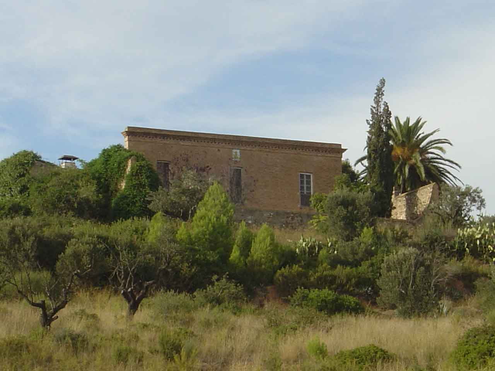
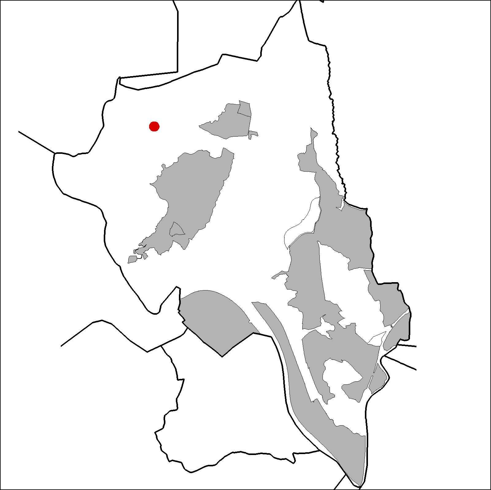

|  |  |
Nom de l’element: Can Segarra
Clau d’identificació: B.1.12
Nucli o indret: Oest de la Serra de l’Ametller.
UTM: X=412.047, Y= 4.595.041, 180 m snm.
Refrència cadstral: Poligon 15, parcel·la 9502 (08053A01509502)
Règim del sòl: Sòl No Urbanitzable.
1.1. Època de construcció i tipologia:
Masia datada entre finals del s. XIII i principis del s. XIV dedicada antigament a l’agricultura d’arbres fruiters i a la vinya. El cos principal és de planta quadrada amb una coberta a dues aigües (fusta i teula), planta baixa i planta pis. Els murs són de mamposteria. La façana original era de composició simètrica i presenta un frontis d’obra vista amb frisos i rajoles de ceràmica representant Sant Llorenç. S’hi han construït tres magatzems annexes al cos central i una piscina. La propietat original era de la família Pi. Al 1400, l’hereva de la família es va casar amb el primer Segarra. Al 1982 es van sanejar els interiors i entre 1984 i 1987 es van posar en règim d’ús les instal·lacions.
1.2. Estat de conservació:
Bo, excepte el paviment, el qual presenta un estat de conservació mitjà.
1.3. Ús actual:
Habitatge i agrícola.
1.4. Accés:
Accés fàcil pel Camí de Can Pastallé a Can Santeugini o des del Camí Nou de Martorell a Ullastrell.
Masia de finals del s.XIII i principis del XIV, dedicada antigament a la vinya i els arbres fruiters.
3.1. Usos admesos:
Habitatge rural (màxim 3 habitatges); residencial; hoteler (excepte aparthotel; i amb un màxim de 30 places); oficines i serveis; industria vinculada a productes del camp (industrial, categoria 1ª); educatiu; recreatiu cultural i social; recreatiu de restauració; esportiu.
3.2. Condicions d’ordenació:
Segons Pla Especial a redactar.
3.3. Accés i serveis:
Camí de Can Pastallé a Can Santeugini o des del Camí Nou de Martorell a Ullastrell.
BCIL (Bé Cultural d’Interes Local)